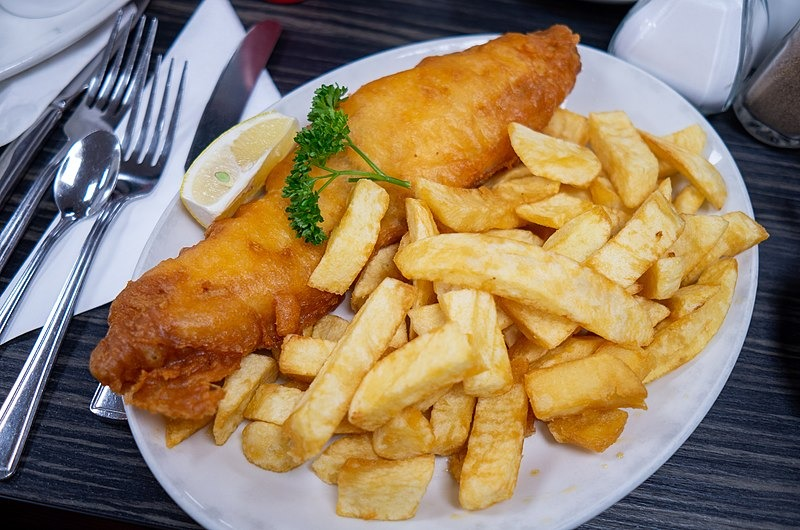
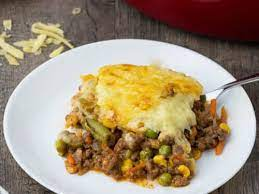
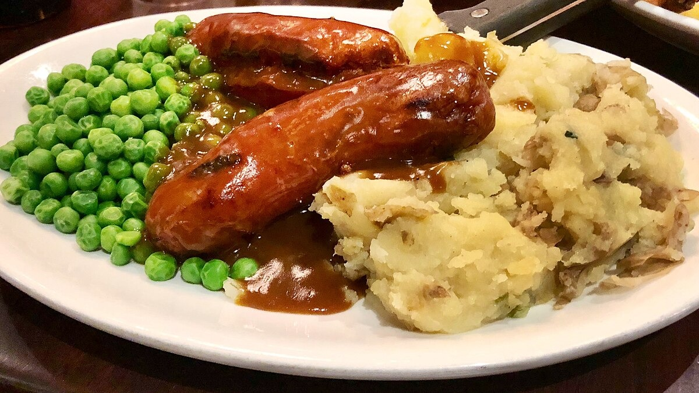
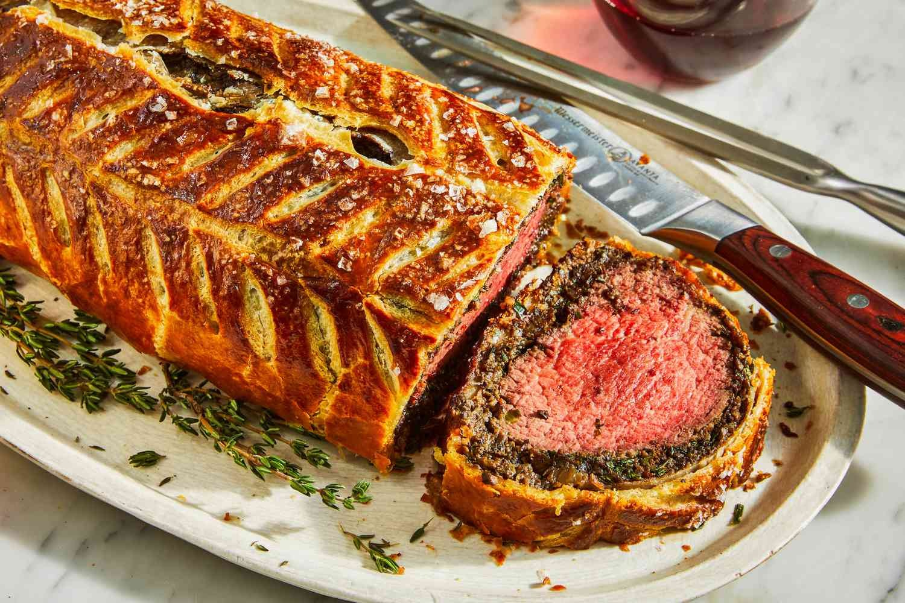
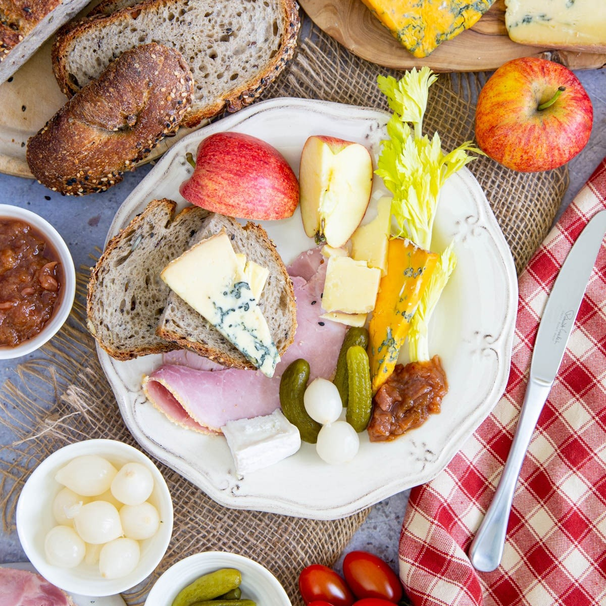
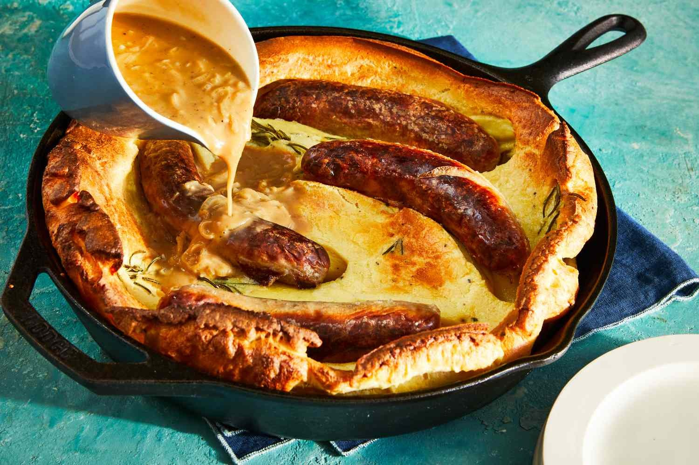
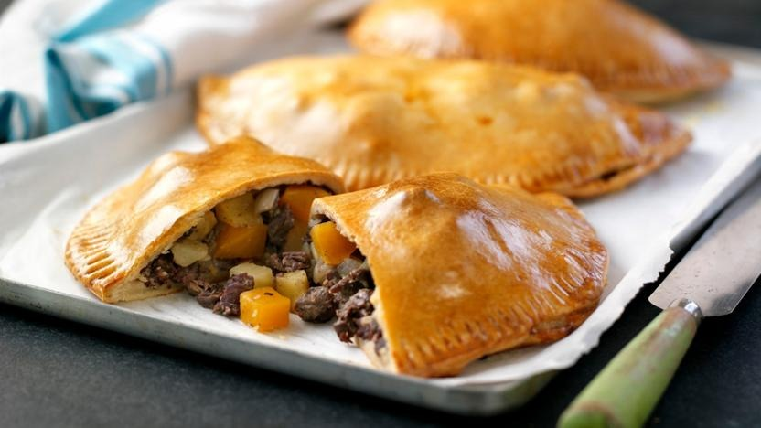
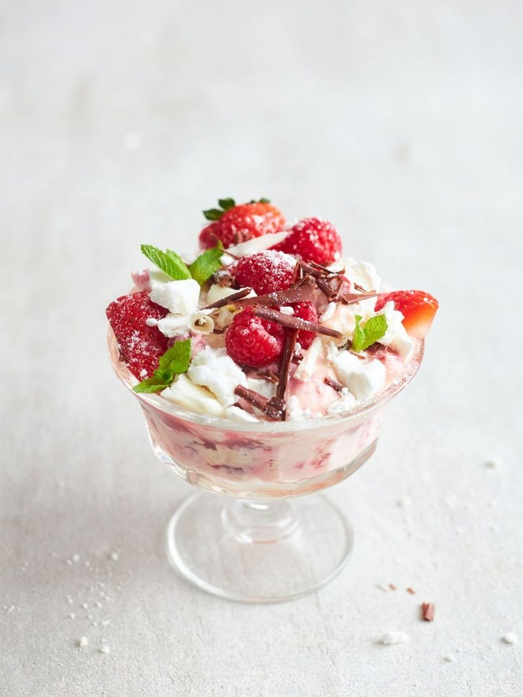
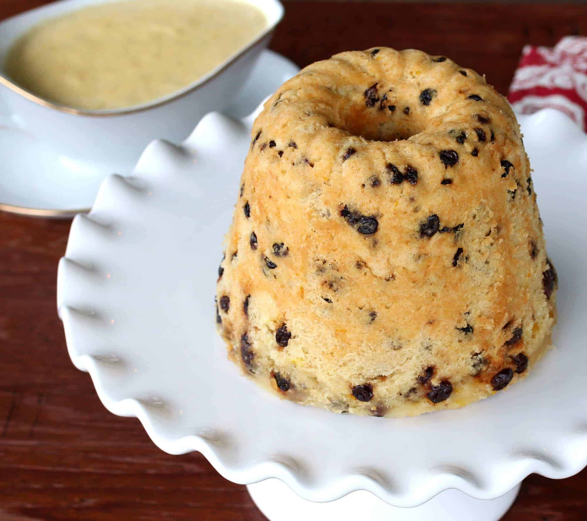

Culinária Inglesa
A culinária inglesa é uma experiência única que merece ser explorada e apreciada. Com uma rica história e influências diversas, a gastronomia britânica oferece pratos tradicionais e saborosos que refletem a cultura e os sabores únicos do país. Desde os clássicos como o famoso "fish and chips" até as deliciosas sobremesas como o "sticky toffee pudding", a culinária inglesa é uma verdadeira viagem gastronômica. Experimente os sabores autênticos e descubra por que a culinária inglesa é tão especial.
| Foto | Nome | Descrição | Preço |
|---|---|---|---|
|  | Fish and Chips | Prato tradicional britânico de peixe frito empanado e batatas fritas, servido com molho tártaro. | € 19,00 |
|  | Shepherd's Pie | Um prato de carne moída cozida com molho, coberto com purê de batatas e assado até dourar. | € 20,00 |
|  | Bangers and Mash | Salsichas grelhadas servidas com purê de batatas. | € 12,00 |
|  | Beef Wellington | Carne bovina coberta com patê e envolta em massa folhada, assada até dourar. | € 15,00 |
|  | Ploughman's Lunch | Um prato tradicionalmente composto por queijo, pão, picles e chutney. | € 8,00 |
|  | Toad in the Hole | Salsichas assadas em uma massa de Yorkshire pudding. | € 12,50 |
|  | Cornish Pasty | Uma massa recheada com carne, batatas e legumes. | € 10,00 |
| Bubble and Squeak | Um prato feito com sobras de legumes e batatas fritas ou refogadas. | € 16,00 | |
|  | Eton Mess | Uma sobremesa feita com morangos, creme de leite e merengue. | € 5,00 |
|  | Spotted Dick | Uma sobremesa de pudim de frutas secas, tradicionalmente servida com creme inglês. | € 7,00 |